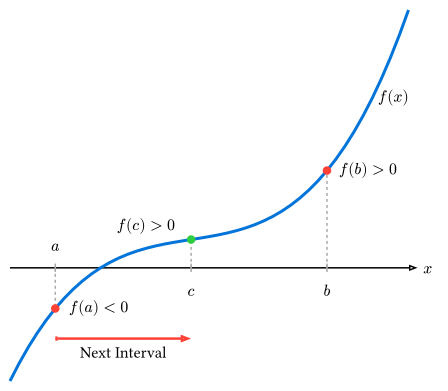
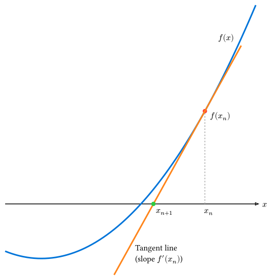

35 非線形方程式の解法
ある関数 \(f(x)\) に対して、 \[ f(x) = 0 \]
を満たす \(x\) を求める問題を求根 (Root finding) と呼びます。
例えば、\(x^2 - 2 = 0\) の正の解は \(sqrt(2)\) ですが、このような代数方程式だけでなく、\(x = cos(x)\) のような超越方程式を解く場面も物理では頻繁に現れます。
本節では、代表的な2つの反復解法である二分法とニュートン法を紹介します。
35.1 二分法 (Bisection Method)
二分法は、解が存在する区間を半分ずつに狭めていくことで解を追い詰める、非常にシンプルで堅牢な手法です。
35.1.1 アルゴリズム
「連続関数 \(f(x)\) において、\(f(a)\) と \(f(b)\) の符号が異なれば、区間 \([a, b]\) の間に少なくとも一つ解が存在する」という中間値の定理に基づいています。
- 解が含まれる初期区間 \([a, b]\) を用意する（ただし \(f(a) dot f(b) < 0\) であること）。
- 区間の中点 \(c = (a + b) / 2\) を計算する。
- \(f(c)\) の符号を調べる。
- \(f(c) = 0\) なら、\(c\) が解である。
- \(f(a)\) と \(f(c)\) が異符号なら、解は \([a, c]\) にあるので、\(b -> c\) と更新する。
- \(f(c)\) と \(f(b)\) が異符号なら、解は \([c, b]\) にあるので、\(a -> c\) と更新する。
- 区間の幅 \(|b - a|\) が許容誤差 \(epsilon\) より小さくなるまで繰り返す。

35.1.2 Rustによる実装
例として、\(x^2 - 2 = 0\) を解いて \(sqrt(2)\) を求めてみましょう。
fn bisection<F>(f: F, mut a: f64, mut b: f64, tolerance: f64, max_iter: usize) -> Option<(f64, usize)>
where
F: Fn(f64) -> f64,
{
for i in 0..max_iter {
let c = (a + b) / 2.0;
let fc = f(c);
if fc.abs() < tolerance || (b - a).abs() < tolerance {
return Some((c, i + 1));
}
// f(a) * f(c) < 0 なら左側に解がある
if f(a) * fc < 0.0 {
b = c;
} else {
a = c;
}
}
None
}
fn main() {
// 解きたい関数: f(x) = x^2 - 2
let f = |x: f64| x * x - 2.0;
let tolerance = 1e-8; // 許容誤差
let max_iter = 100; // 最大反復回数（無限ループ防止）
// 初期区間 [1.0, 2.0] には解がある
match bisection(f, 1.0, 2.0, tolerance, max_iter) {
Some((root, iter)) => println!("解が見つかりました: x = {:.10} (反復回数: {})", root, iter),
None => println!("収束しませんでした。"),
}
}35.1.3 特徴
- 長所: 初期区間に解があれば、必ず収束する（大域的収束性）。
- 短所: 収束が遅い（1回の反復で精度が1ビット、つまり2進数で1桁しか良くならない）。
35.2 ニュートン法 (Newton’s Method)
ニュートン法（ニュートン・ラフソン法） は、関数の微分情報 \(f'(x)\) を利用して、より高速に解に収束させる手法です。
35.2.1 アルゴリズム
現在の推定値 \(x_n\) における接線を引き、その接線と \(x\) 軸との交点を次の推定値 \(x_(n+1)\) とします。 テイラー展開の1次近似からも導出できます。
\[ f(x) approx f(x_n) + f'(x_n)(x - x_n) = 0 \]
これを \(x\) について解くと更新式が得られます。
\[ x_(n+1) = x_n - f(x_n) / (f'(x_n)) \]

35.2.2 Rustによる実装
同様に \(x^2 - 2 = 0\) を解きます。ここでは導関数 \(f'(x) = 2x\) を利用します。
fn newton<F, G>(f: F, df: G, mut x: f64, tolerance: f64, max_iter: usize) -> Option<(f64, usize)>
where
F: Fn(f64) -> f64,
G: Fn(f64) -> f64,
{
for i in 0..max_iter {
let fx = f(x);
if fx.abs() < tolerance {
return Some((x, i));
}
let dfx = df(x);
// 接線の傾きが0に近いと発散の危険がある
if dfx.abs() < 1e-10 {
return None;
}
x -= fx / dfx;
}
None
}
fn main() {
let f = |x: f64| x * x - 2.0;
let df = |x: f64| 2.0 * x; // f(x) の導関数
let tolerance = 1e-8;
let max_iter = 100;
match newton(f, df, 1.0, tolerance, max_iter) {
Some((root, iter)) => println!("解が見つかりました: x = {:.10} (反復回数: {})", root, iter),
None => println!("収束しませんでした。"),
}
}35.2.3 特徴
- 長所: 解の近くでは非常に高速に収束する（2次収束: 正しい桁数が反復ごとに倍になる）。
- 短所:
- 導関数 \(f'(x)\) が必要（数値微分で代用することも可能）。
- 初期値が解から遠いと収束しないことがある（局所的収束性）。
- \(f'(x) approx 0\) となる場所では不安定になる。
35.3 どちらを使うべきか？
- 二分法: とにかく安全に解きたいとき、関数の性質がよく分からないとき。
- ニュートン法: 微分が計算でき、高速に解きたいとき。初期値の良い推定ができるとき。
実用的には、これらを組み合わせたブレント法 (Brent’s Method) などが多くの数値計算ライブラリで採用されています（最初は安全な二分法などを使い、解に近づいたら高速な手法に切り替えるアルゴリズムです）。
35.3.1 実用的なライブラリ (Brent法)
実務で求根を行う場合、Brent法を自前で実装するのは複雑でバグの原因になりやすいため、通常はライブラリを使用します。 Rustでは、例えば roots クレートなどが利用できます。
[dependencies]
roots = "0.0.8"使用例:
use roots::find_root_brent;
use roots::SimpleConvergency;
fn solve_sqrt2_with_brent() -> Result<f64, roots::SearchError> {
let f = |x: f64| x * x - 2.0;
let mut convergency = SimpleConvergency { eps: 1e-15f64, max_iter: 30 };
// 区間 [1.0, 2.0] で解を探す
// find_root_brent(初期区間始点, 初期区間終点, 関数, 収束条件)
find_root_brent(1.0, 2.0, &f, &mut convergency)
}
fn main() {
match solve_sqrt2_with_brent() {
Ok(val) => println!("解: {}", val),
Err(e) => println!("エラー: {:?}", e),
}
}35.4 まとめ
- 二分法は、解を挟む区間を縮小していく手法で、確実に収束するが速度は遅い。
- ニュートン法は、微係数を利用して解を探索する手法で、高速に収束するが適切な初期値が必要である。
- 実用的な問題では、安定性と速度を兼ね備えたブレント法が推奨される。Rustでは
rootsクレートを利用することで手軽に実装できる。
次節では、変数が複数ある場合の連立非線形方程式の解法について学びます。